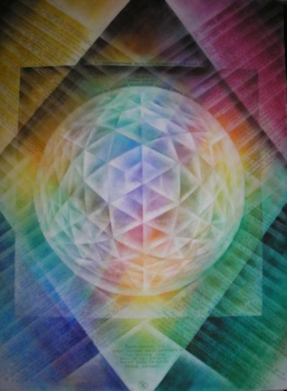
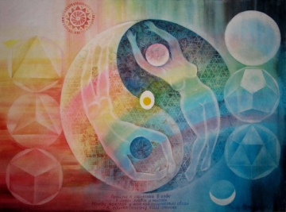
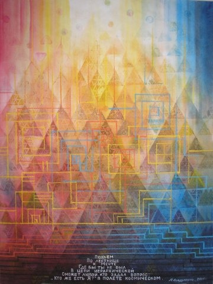

В защиту радуги
Мост небесный между тонким и явленным
Дуга радости прошлого с будущим
Нам поможет понять тайны древнего,
Кто есть я на Земле, тем кто думает!

Не могу не написать о том, что волнует меня в последнее время и как художника, и как человека. В СМИ все чаще натыкаешься на то, что символ радуги постепенно становится символом людей нетрадиционной половой ориентации. Посмотрите на западные гей-парады - в руках полуголых, нелепо разукрашенных особ обоего пола – радужные флаги. Это не просто огорчает. Меня возмущает тот факт, что с какой легкостью нормальные люди – натуралы это проглатывают. Недавно я сама столкнулась с нечто подобным. Дама приехавшая из-за границы, указывая на мою цветную заколку сказала, что глядя на нее, там меня приняли бы за «сами знаете что». ЧТООО!!! Я сказала ей, что я люблю радугу, что у меня другие ассоциации. И я не собираюсь в угоду чьим-то извращенным понятиям менять свое мнение. Пусть они меняют свою раскраску на более им подходящие оранжево-красные цвета. Именно они, согласно эзотерическим знаниям, по цветам соответствуют двум нижним чакрам, отвечающим за половую сферу. Но никак не все цвета.

В нашей стране само название этого небесного явления образное - дуга радости. Исстари радугу связывали с лестницей в небо, с мостом между человеком и небом. Или Богом - об этом говорится во всех религиях. Меня давно интересует эта тема и по ней прочитано немало. Например, в книге Терезы Версполь «Возникновение и тайна радуги с тоски зрения гетеанизма » эта тема рассматривается и как раскрытие человеком своей радуги. «Весь окружающий мир гармонизируется в человеке как в некой точке, так что человек может также с полным правом быть описан как микрокосмос. И такое небесное явление, как радуга, являющее собой первообраз, не может не обнаруживаться также и в человеке. Но как это можно понимать? … Вся наша земная природа и Космос одушевлены; в цвете душа природы и всего Космоса становится видимой для человеческого глаза, и человек может душевно переживать цвета и тем самым становиться причастным душе природы и всего Космоса. Цвет – это мост между человеком и душевным миром! У того, что внешне нам является как цвет, есть внутреннее, есть сущностное зерно, и это душа. Человеческая душа своими ощущениями реагирует на видимые проявления мировой души и тем самым доказывает, что обе являются сущностями одного рода, ибо «подобное может быть познано лишь подобным»….. Это значит нечто иное, как то, что человек в самом себе переживает всю сущность цвета в образе его душевных настроений, от тишайшей радости до захватывающего восторга; боль, тоска, надежда, разочарование – душевные настроения во всех оттенках и нюансах протекают через человеческую грудь. «Круговорот мира, круговорот духовности» бушует в собственной груди человека. … Человек несёт в себе свою собственную радугу. Мы несём в нашей груди те же самые силы, которые в облаках ведут к святейшему явлению радуги».

Под впечатлением от этих знаний и небесного узора у меня появились серии картин: «Радужный путь», «Пробуждение», «Аркаим». Что ж , мне их теперь не показывать на выставках ?!
В нашей стране столько детских лагерей, организаций, конкурсов , магазинов имеющих название «Радуга». Что же теперь им всем менять вывеску, в угоду заграничным кукловодам, которые провоцируют это и подменяют понятия. Ведь не дяденьки в стрингах это придумали, а манипуляторы в дорогих костюмах – это очевидно. И здесь идет речь не о ущемлении их права на свободу выбора, которое западная пресса пыталась нам дать в вину еще перед Олимпиадой в Сочи, после запрета пропаганды гомосексуализма, а о навязывании бесстыдного, аморального, поведения. Да, да, надо называть вещи своими именами. Во все времена, повсеместно в здоровом общество это, мягко выражаясь, не приветствовалось. Иначе уже давно бы наша цивилизация выродилась. Это не просто игры в толерантность. Если у кого- то есть проблемы с гормонами, то есть специалисты. А если нет желания к ним обращаться, тои показуху не надо устраивать . Это взаимоотношение двоих, а не толпы. Даже трудно представить, если бы натуралы стали устраивать свои секс парады.
Радуга - общечеловеческий символ прохождения эволюционного пути каждого человека. Если мы начнем думать: «А что там кто-то скажет?», то может повториться история с такими же прекрасными космическим символом вечного движения, как свастика издревле бывшим символом нашего Млечного пути. Как известно, он стал одним из самых главных знаков, взятых фюрером с Тибета для своей партии лет 80 назад. А ведь сам знак существовал значительно раньше и на нашей территории, вплоть до 1918года ( на одной из денежных купюр.) Издревле он был на узорах, украшающих быт и одежду жителей Руси. Он имеет более 100 изображений и автоматически негатив идет и на слово и на все изображения. Сейчас, поди, попробуй, изобрази свастику в своих работах – его сразу назовут фашистским. Или знак пятиконечной звезды – знак совершенного человека , в перевернутом виде его ,непременно, будут соотносить с другим понятием.
На днях об идеи написания этой статьи я сказала моей коллеге. На что она ответила, что не надо ворошить и тема сама рассосется. Возможно, она и права. Но последние события на Украине говорят об обратном. Мы все игнорировали их майдан и посмотрите, во что это вылилось теперь! Я думаю, что права, написав ее, и многие со мной согласятся. Надеюсь, еще больше людей поддержат. Эта статья не против взглядов секс-меньшинств. Все-таки у нас свобода мировосприятия. Эта статья в защиту символа радуги от попытки присвоения ее изображения, о желании сделать ее их знаком! Хотя самой радуге, конечно же, все равно.
Я очень хочу, чтобы в нашей стране символ радуги ассоциировал только с радостью и преображением, и чтобы его изображение преумножалось. Мне очень понравилось в связи с этим то, что на нашей Олимпиаде в Сочи была радужная символика и в одежде, и в оформлении.
У меня дома лежат радужные перчатки из Сочи– радость в руках.
Асадуллина Ляля, художник.